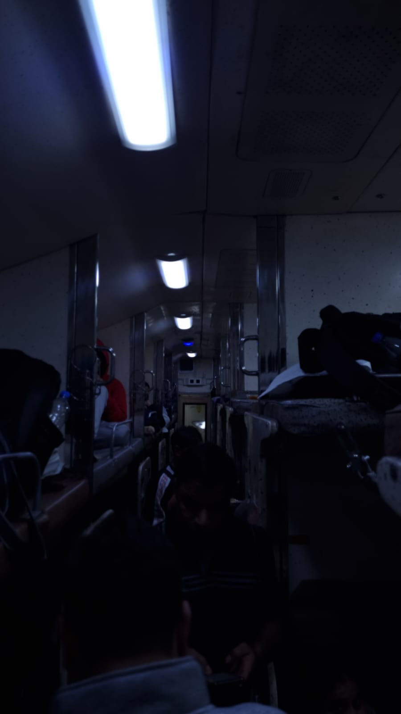
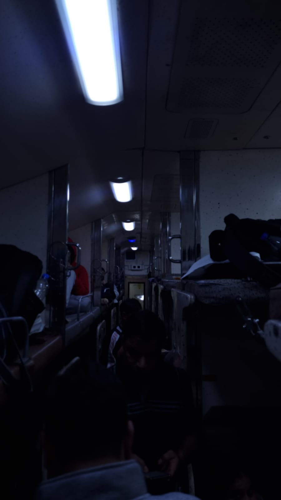

FILM MAKER
Kartavyaa maggo
FILM DIRECTOR | WRITER | ACTOR
I am kartavyaa maggo , born and raised in New delhi, and my journey into the world of filmmaking commenced with a profound passion for storytelling through independent short films on YouTube. As my horizons expanded through exposure to global cinema, my knack for narrative artistry across diverse genres flourished. This odyssey ultimately guided me to the hallowed halls of Dada Lakhmichand University of Performing and Visual Arts, Rohtak, where I pursued film studies.
At university, I immersed myself in every facet of filmmaking—from direction and screenwriting to cinematography and editing—gaining both technical precision and creative confidence.
In sun-soaked Ratnagiri, young Bholu guards his precious mango with pride. Three eccentric thieves — suave Shyam, sly Raju, and goofy Babu — sneak in under moonlight.
Their break-in turns chaotic, with vases crashing and comedy unraveling in slow-motion mayhem.
Just as they seize the golden mango, Bholu appears, valiantly failing to stop them. Suddenly, he wakes — it was all a vivid, mango-fueled dream. Bholu and the Mango Heist is a whimsical tale about obsession, innocence, and the thin line between dreams and reality. The story playfully explores how something as simple as a mango can spiral into chaos — reflecting our tendency to give outsized value to the things we love. Through humor and surreal twists, it hints at deeper themes: childhood imagination, the unpredictability of life, and how even the most absurd moments might carry a strange, unsettling truth.
Through humor and surreal twists, it hints at deeper themes: childhood imagination, the unpredictability of life, and how even the most absurd moments might carry a strange, unsettling truth.
Script Writing
Photography
Photoshop
Premiere Pro
 


We suffer more often in imagination than reality.
— Seneca
Collaborating with talented peers and mentors allowed me to refine my voice and explore the emotional depth and visual language unique to cinema. Each project became a stepping stone, pushing me to experiment boldly and remain authentic to my vision.
Driven by the belief that film is a powerful medium for empathy and change, I strive to craft stories that resonate deeply with audiences—stories rooted in truth, humanity, and artistic honesty. Whether directing music videos, short films, or narrative pieces, I aim to blend innovation with emotion, always seeking to leave a lasting impact through the moving image.
As I turn the final page of this portfolio, I am filled with gratitude for your time and attention. Your willingness to explore my work means the world to me, and I hope it has offered you a glimpse into my passion for filmmaking.
Filmmaking is not just a profession for me; it's a lifelong dream and a creative journey I am deeply committed to. Each project I undertake is a labor of love, a testament to my dedication to the craft, and an opportunity to bring stories to life on the silver screen.
Thank you once again for taking the time to explore my portfolio. Your support and interest mean more than words can express, and I am excited about the possibilities that lie ahead. Let's make magic on the silver screen together!
With sincere appreciation,
KARTAVYAA MAGGO
Followkartavyaa@gmail.com
+918527797334